UDN
Search public documentation:
BspBrushesTutorialKR
English Translation
日本語訳
Interested in the Unreal Engine?
Visit the Unreal Technology site.
Looking for jobs and company info?
Check out the Epic games site.
Questions about support via UDN?
Contact the UDN Staff
日本語訳
Interested in the Unreal Engine?
Visit the Unreal Technology site.
Looking for jobs and company info?
Check out the Epic games site.
Questions about support via UDN?
Contact the UDN Staff
BSP 브러쉬
문서 요약: BSP 브러쉬에 대한 안내로, 작성 및 변경에 사용되는 도구는 물론 관련 문서로의 링크가 포함되어 있습니다. 초보자들에게 많은 도움이 될 것입니다. 문서 변경 내역: 최종 업데이트 Michiel Hendriks. 이전 업데이트 Tom Lin (DemiurgeStudios?) - 문서 요약 섹션 업데이트. 원저자 Tony Garcia (UdnStaff).BSP 브러쉬 소개
우선 BSP (Binary Space Partitioning, 이진 공간 분할법)란 레벨의 공간 내에서 객체들을 조직하는데 사용되는 데이터 구조이며, 의미상으로는 도형의 타입을 표현하는 정확한 용어가 아니라는 것을 말씀드립니다. Unreal Engine 에서 브러쉬를 첨가하고 빼냄으로써 만들어진 도형에 대해서는 CSG (Constructive Solid Geometry, 구조적 입체 기하도형)가 더 정확한 용어이지만, BSP 가 이 도형을 가리키는 용어가 되어 잘못 붙여진 별명처럼 굳어져 버렸습니다. 그러므로 에디터에서 브러쉬를 사용하여 만들어진 도형을 일컬을 때 BSP 와 CSG 라는 두 용어가 번갈아 사용되는 일이 흔히 있다는 것을 염두에 두시기 바랍니다. BSP 브러쉬는 레벨의 기본 빌딩 블록입니다. BSP 브러쉬를 거의 사용하지 않고도 레벨을 빌드할 수 있지만, 그래도 세계가 있는 곳을 “잘라 내기” 위해 적어도 한 개의 BSP 브러쉬는 있어야 합니다. "허공" 을 입체라고 생각하고 그곳에서 세계가 존재할 지역을 빼내야 합니다. BSP 브러쉬를 사용해서 이 지역을 빼냅니다.BSP 브러쉬의 용도
이제는 레벨을 도형으로 채울 때 정적메쉬가 주로 사용되지만, 아직도 BSP 브러쉬가 쓰이는 곳이 많습니다. 다음은 BSP 브러쉬의 몇 가지 용도이며, 이것들에 대해 자세히 설명된 문서에 링크되어 있습니다:- 레벨이 있는 주 “박스 (들)”
- 스카이 박스?
- 존 포털?
- 앤티포털 볼륨?
- 특수 볼륨
- 거울 및 와프존
BSP 브러쉬의 종류
사용할 수 있는 BSP 브러쉬에는 3 종류가 있습니다:- Subtractive (빼내기식) — 레벨이 존재하는 공간을 잘라내는데 사용됩니다.
- Additive (첨가식)
- Solid (입체) — 공간을 채우는 모든 것들에 대해 사용됩니다.
- Non-solid (비입체) — zoneportal/antiportal 처럼 얇은 판에 대해 사용됩니다.
- Antiportal Volumes (앤티포털 볼륨) — 레벨 내에서 모든 종류의 도형을 차단하는데 사용됩니다.
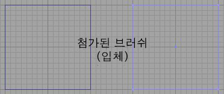
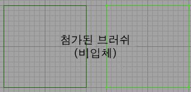
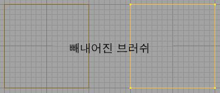
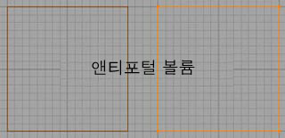
BSP 브러쉬의 작성
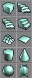
BSP 브러쉬를 만들려면 프리미티브를 선택한 다음, 그 아이콘을 오른 클릭하여 숫자를 입력함으로써 크기를 조정합니다.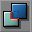
빼냅니다. “Add Special” 버튼을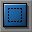
사용하면 비입체 브러쉬 (주로 존 포털에 대해 사용되는) 를 첨가할 수 있습니다. "Add Antiportal" 버튼은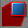
렌더러로부터 도형을 차단하는 비입체 브러쉬를 만듭니다. 이것은 일단 만들어지면 변경할 수 없습니다. 자세한 내용은 LevelOptimization 문서를 참고하십시오.BSP 브러쉬의 변경
BSP 브러쉬를 변경하는 방법은 여러가지입니다. 모양을 바꾸고, 크기를 조정하고, 정점들을 이리저리 옮기고, 브러쉬를 클립하는 등… 꼭 필요한 모양대로 만들기 위해 브러쉬를 얼마든지 조작할 수 있습니다. 브러쉬 변경 모드에 접근하는 방법에는 두 가지가 있습니다. 하나는 맨 위의 Menu 에서 Brush 로 가서, 거기서 원하는 방법을 선택하는 것입니다.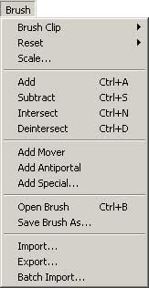
또, 툴바에서 모드를 선택할 수도 있습니다.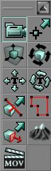
그리고 브러쉬를 오른 클릭하면 선택할 menu 를 열 수 있습니다. 여기서 Brush Properties (및 그밖의 유용한 함수들)에 접근할 수도 있습니다.정점 편집하기
툴바에서 Vertex Editing? 모드를 선택하거나, 아니면 정점을 클릭한 다음 그 정점을 이동하는 동안 CTRL 키를 누르고 있으면 됩니다. VertexEditing 문서에 정점 편집에 관한 많은 정보가 있습니다.스케일링하기
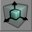
툴바에서 brush scale 아이콘을 클릭하여 브러쉬의 크기를 조정합니다. 마우스를 움직이는 동안 CTRL-LMB 를 누르고 있으면 브러쉬 크기를 조정할 수 있습니다. 또 맨 위의 Menu 에서 Brush 로 가서 Scale 을 선택해서 브러쉬 크기를 조정할 수도 있습니다. 이렇게 하면 Brush Scaling 대화상자가 열립니다. 여기서 각각의 축에 대한 숫자를 입력하면 원하는 크기를 얻을 수 있습니다. 예를 들어 256 입방의 브러쉬가 있는데 높이를 두배로 (512) 하고 길이와 넓이는 같게 하고 싶다면, Z 축에 2 를 입력하고 나머지는 1로 남겨두면 됩니다.
여기서 각각의 축에 대한 숫자를 입력하면 원하는 크기를 얻을 수 있습니다. 예를 들어 256 입방의 브러쉬가 있는데 높이를 두배로 (512) 하고 길이와 넓이는 같게 하고 싶다면, Z 축에 2 를 입력하고 나머지는 1로 남겨두면 됩니다.
회전하기
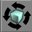
Brush Rotate 모드에서, 또는 CTRL 키를 누른 채로 다른 2D 뷰에서 마우스를 움직임으로써 브러쉬를 회전합니다.클리핑하기
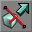
툴바에서 Brush Clipping 버튼을 클릭하면 브러쉬를 클립할 수 있습니다. 브러쉬 클리핑에 대한 구체적인 설명은 Brush Clipping? 문서에 있습니다.면 잡아끌기
브러쉬의 속성들
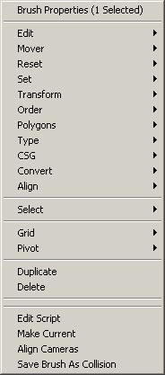
브러쉬를 오른 클릭해보면 여러가지 함수들이 있습니다. 다른 곳에서도 읽을 수 있는 정보를 여기서 되풀이 하지는 않겠습니다. 다만 이 메뉴를 통해 접근할 수 있는 함수들에 대한 개요만을 설명하겠습니다.Edit
(주: 다음은 첨가된 또는 빼내어진 브러쉬에 대해서만 작용합니다)- Cut — 브러쉬를 삭제한 다음 클립보드에 복사합니다.
- Copy — 브러쉬를 클립보드에 복사합니다.
- Paste — 클립보드에서 브러쉬를 가져와 세계의 다음 장소에 붙여 넣습니다 ...
- 원래의 위치
- 현재의 위치
- 세계의 원점
Reset
- Move to Origin (원점으로 이동) — 브러쉬를 그 피벗 포인트 좌표를 0,0,0 으로 해서 다시 맵의 중심으로 이동합니다.
- Reset Pivot (피벗 재설정) — 아래의 피벗을 사용합니다.
- Reset Rotation (회전 재설정) — 브러쉬를 회전했는데 다시 원래의 회전으로 되돌리고 싶을 때 사용합니다.
- Reset Scaling (크기 재설정) — 브러쉬의 크기를 바꾸거나 조정했을 경우 이것을 사용하면 원래의 크기로 되돌립니다.
- Reset All (모두 재설정) — 브러쉬의 스케일링 및 회전을 모두 재설정하고, 다시 원점으로 이동합니다.
Set
- Location/Rotation from Camera (카메라로부터의 위치/회전) — 활성 윈도우의 카메라 정렬을 위한 방향과 위치를 설정합니다.
Transform
- Scaling (스케일링) — 브러쉬 스케일링을 참고하십시오.
- Mirroring (미러잉) — 주어진 축에서 브러쉬를 미러합니다.
- Transform Permanently (영구적으로 변환) — 브러쉬를 스케일하거나 회전하면 에디터가 이것을 “알게” 됩니다 (그렇기 때문에 재설정할 수 있는 것입니다). 그러므로 영구적으로 변환한다는 것은 브러쉬에 행해진 스케일링/회전을 영구적인 것으로 만드는 것입니다. 또 정점을 편집할 때 줌인 하면 브러쉬가 시야에서 사라지는 일이 가끔 있는데, Transforming permanently 를 사용하면 이 문제가 해결됩니다.
Order
브러쉬의 그리는 순서를 변경합니다. 이제는 별로 많이 사용되지 않지만 빼내어진 브러쉬가 먼저 그려진 것을 잊어버리고 첨가된 브러쉬를 그 안으로 들어가게 한 경우 등에 편리합니다 :)Polygons
여기서는 브러쉬의 폴리곤들을 합치거나 분리할 수 있습니다. 분리된 한 면이 있는데 이것을 한 개의 폴리로 줄이고 싶다면 이것을 사용하십시오. 이 경우 면들이 반드시 한 평면상에 있어야 하며, 같은 텍스처와 같은 정렬을 가지고 있어야 합니다. 이것들을 분리하면 그 반대로 할 수 있습니다.Type
브러쉬를 solid 에서 non-solid 로 바꿀 수 있습니다. Semi-solid 는 폐지되었습니다.Pivot
피벗 포인트를 설정 또는 재설정할 때 사용합니다.CSG
(주: 다음은 첨가된 또는 빼내어진 브러쉬에 대해서만 작용합니다)- Additive — 브러쉬를 첨가된 브러쉬로 변경합니다.
- Subtractive — 브러쉬를 빼내어진 브러쉬로 변경합니다.
Convert
- To Static Mesh (정적 메쉬로) — 선택된 도형을 정적 메쉬로 변환합니다.
- To Brush (브러쉬로) — 선택된 도형의 형태로 브러쉬를 만듭니다.
Align
- Snap to Floor (바닥에 스냅) — 도형을 그것이 들어있는 BSP 영역의 가장 밑바닥으로 이동합니다.
- Align to Floor (바닥에 정렬) — 그것이 들어있는 BSP 영역의 방향으로 정렬합니다.